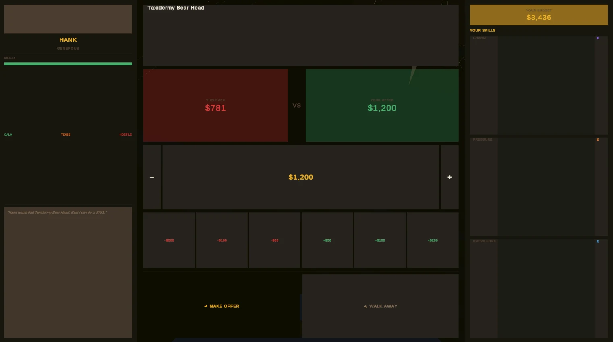
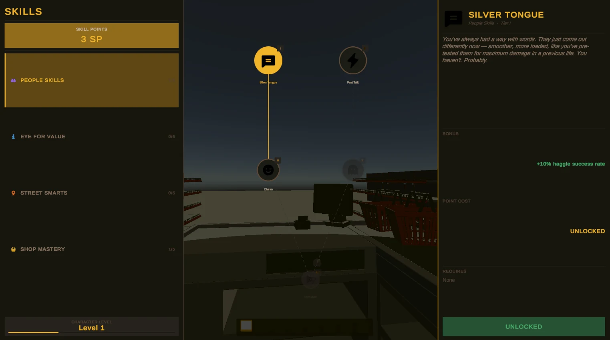
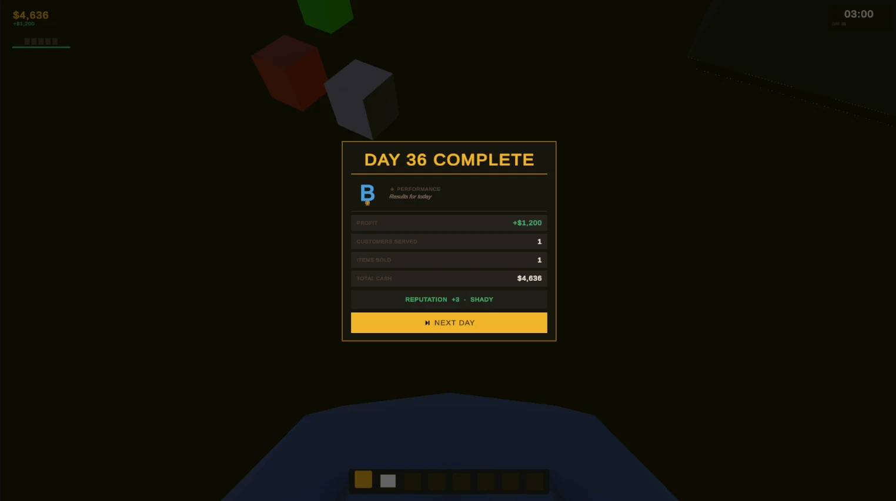
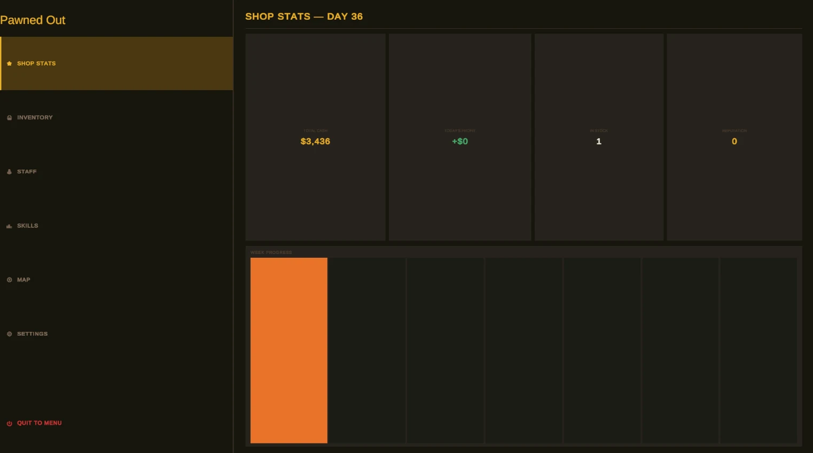
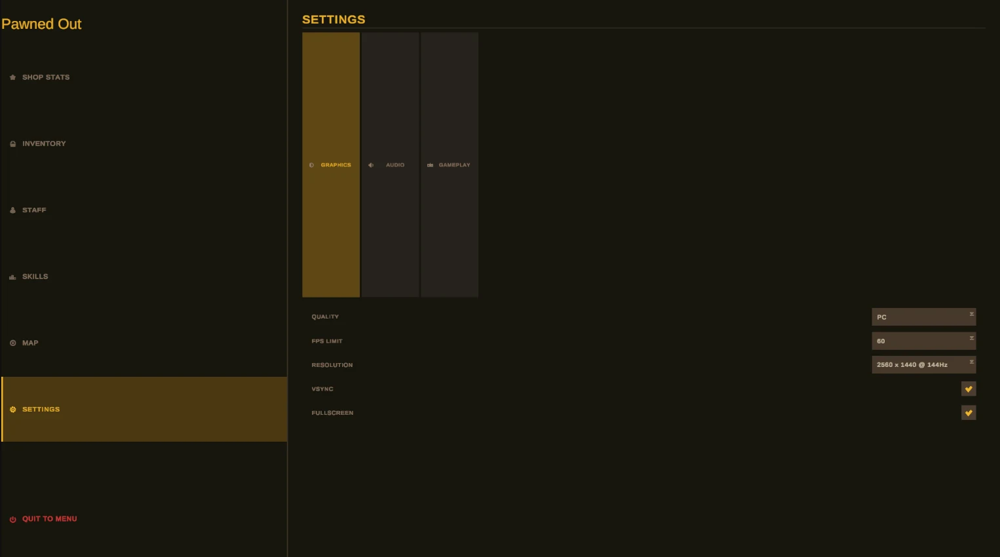
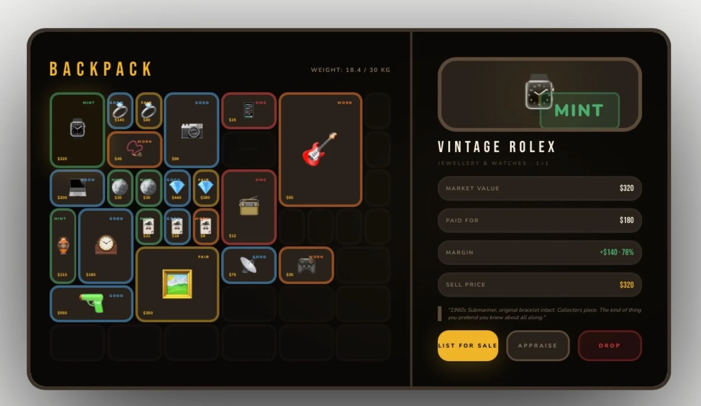
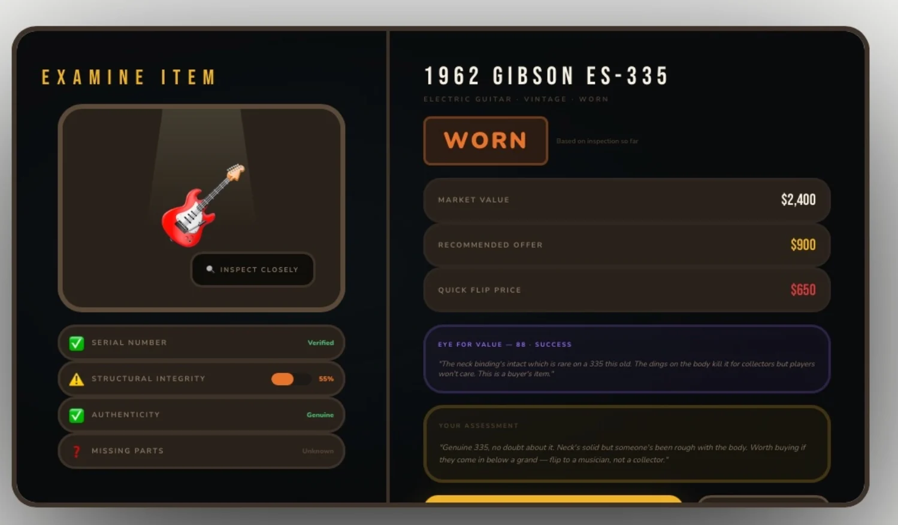

A shop counter full of decisions
Most of the game happens in quick trades with a queue of customers waiting. If a screen makes you hunt for a number, you lose the thread of the deal. So every screen starts from the same question: what does the player need to decide right now, and what's the one number that decides it?

Haggling you can read at a glance
Haggling is the heart of the game, so it gets the clearest layout. Their price and yours sit side by side in red and green. The customer's mood runs from calm to hostile, so you can see how far you can push before they walk. Fixed steps of 50, 100 and 200 make adjusting a price a single click, your budget sits top right, and there are only two ways out: make the offer or walk away.

Progress you can feel
Skills are only worth unlocking if you can tell what they do, so each one states its effect as a number, like a 10% better chance of a haggle landing. The end of each day gives you a grade and a short summary, then one button starts the next day, so there's a natural moment to stop or keep going.




Designed first, then built
I design each screen before building it in Unity, so the layout decisions are made while they're still cheap to change. Appraisal is already working in the game, and the backpack is being built towards this design: condition gets its own colour on every item, and opening one puts what it's worth, what you paid and your margin in one column.


I studied games, animation and VFX at college before computer science, and this is where both sides meet. So far I've done the game design, the UX research and the UI, and built all of it in Unity myself. It's still a work in progress, so these screens will keep changing.
Stack
- Unity 6
- C#
- Unity UI